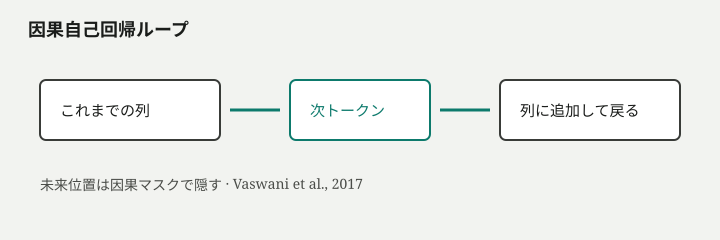
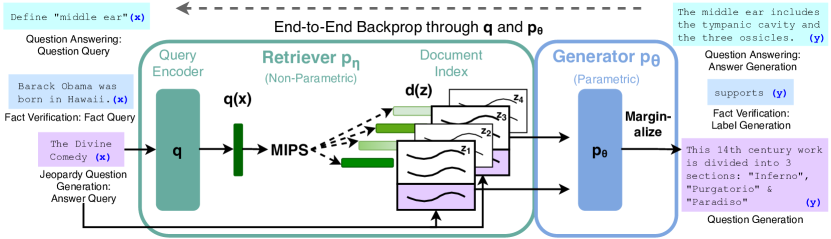
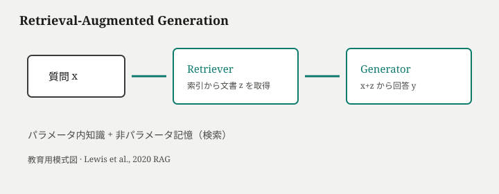
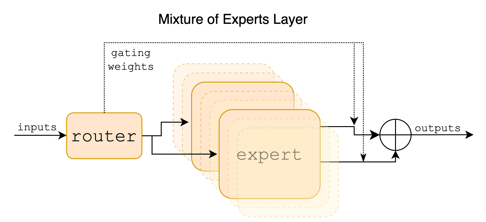
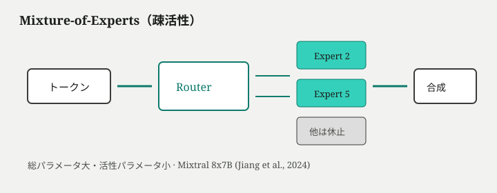
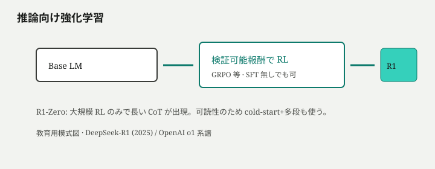
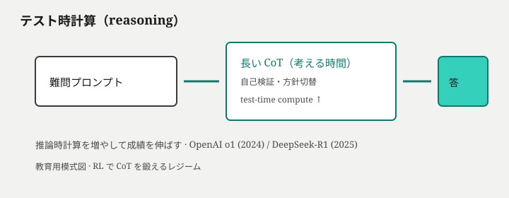
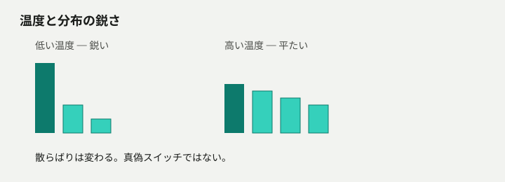

チャット欄に一文入れると、まるで誰かが考えたような答えが返ってくる。なのに、翌日同じ質問をすると別の言い回しになり、たまに自信満々に存在しない論文や法律を引用する。「検索した」「考え中」「ツールを使った」と表示されても、それでも間違うことがある。画面は「会話」なのに、裏側が会話相手なのか、巨大な次トークン予測なのか、読者は日常的に判別できないまま使い続けている。
「賢いから信じる」「騙されやすいから捨てる」の二択では、主体性が残らない。どこまでが統計的な次トークン生成で、どこからが事後調整・検索・道具・推論時計算の外側の仕組みなのかを層で言えないと、仕事の委任・検証・拒否の判断を他人やベンダーの雰囲気に預けることになる。理解で取り戻すのは、答えの正しさの予言ではなく、どの層で疑うかの選択権である。
この記事の狙いは、制約から機構を組み立て直すことだ。用語は必要が立ってから出し、各解決には一次由来の図やシミュレーションを添えて進む。
理解の道筋
進むのは部品名の目次ではなく、次の問題の列である。
- 文章を計算可能にするには、何を「記号」にすればよいか
- ラベルなしテキストから、何を学べば次の文が書けるのか
- 長い文脈をどう混ぜ、左から確定させ、窓の限界にどう直面するか
- 「アシスタントらしい」態度は、どの追加学習で載るのか
- 知識と操作が足りないとき、検索・ツールという外側をどう契約するか
- 大きくする／考えさせる／それでも残る失敗を、どの層で疑い外に渡すか
入口の三つの日常の謎——揺れと偽引用、長い会話での忘れ、「検索した・考え中・ツール」でも誤り——は、該当する層で回収する。
文章を記号列にする
チャット欄に「明日の会議、資料を要約して」と打つと、返ってくるのは人間らしい日本語だ。画面の体験は連続した意味の流れに見える。ところが、裏側の計算機は文字列をそのまま扱えない。ニューラルネットの中身は行列の積と足し算の連鎖であり、入力はすべて実数のベクトルでなければならない。「会議」という二文字も、「要約」という概念も、重み行列にそのまま掛け算できる形ではない。ここで最初の壁が立つ。連続に見える文章を、学習可能な計算対象にするにはどう離散化するか——この問いに答えられなければ、その先の「賢い返答」も説明の足場がない。
行列は文字を掛け算できない
計算グラフに入れる前に、文章は有限個の記号への写像が要る。キーボードから入った Unicode の列は、いくら並べても浮動小数点の配列にはならない。逆に、モデルが出力するのも実数ベクトルの列であり、そこから再び人間が読める文字列へ戻す手続きが別途いる。つまり入口と出口の両方で、文字列 ↔ 整数列 ↔ ベクトル列という往復が設計上の前提になる。ここで「単語」という日常語に頼ると早い段階で誤る。モデルが見ている単位は、人間の辞書の語ではなく、訓練時に固定された分割規則が切り出すトークン（部分語の記号）である。
サブワード分割
語彙を「見たことのある単語だけ」に閉じると、新しい固有名詞や造語のたびに未知記号が発生する。機械翻訳の現場では、未知語を丸ごと <unk> に潰すと意味が抜け落ち、文全体の学習信号が弱くなる。Sennrich らは、頻出の文字列断片を反復的に結合して語彙を作る BPE（Byte Pair Encoding） 型のサブワード分割を提案し、開語彙（未見の語も既知の部分列の組み合わせで表す）を可能にした（*1）。「internationalization」が長すぎて語彙に入らないなら、inter + national + ization のように既知の部分列へ割る。日本語でも同じ原理が働く。「東京都庁」が一塊のトークンにならなければ、「東京」「都」「庁」やさらに細い断片へ分解される。
分割規則は訓練コーパス上の頻度統計から決まり、意味の境界を尊重するわけではない。「食べる」と「食べられる」が別トークン列になるのは、学習データでの出現パターンの帰結であって、活用理解の結果ではない。だからこそ、トークンは単語ではないという戒めが必要になる。画面に見える「単語」単位と、モデル内部のインデックス列は一致しない。
BPE の学習手順を一段だけ追うと、誤解が減る。最初は文字（またはバイト）単位の細かい記号集合から始め、コーパス全体で最も頻繁に隣接する二つの記号を結合し、新しい合成記号を語彙に追加する。これを語彙サイズが目標の \(V\) に達するまで繰り返す。頻出の「ing」「tion」「東京」といった断片が早い段階で一つの記号に昇格し、稀な綴りは細かいまま残る。結果として、同じアルファベット列でも、採用したマージ履歴が違えばトークン列は一致しない。製品ごとにトークナイザが異なるのは、この履歴が訓練コーパスとハイパーパラメータに紐づくからだ。
日本語の短文で境界のずれを見る。「資料を要約して」という入力を、仮想のトークナイザ A と B で扱うと次のようになる（ID は例示）:
トークナイザ A:
| 表示 | トークン列 |
|---|---|
| 資料を要約して | ["資料", "を", "要約", "して"] |
トークナイザ B（「要約」が未学習で分割される場合）:
| 表示 | トークン列 |
|---|---|
| 資料を要約して | ["資料", "を", "要", "約", "して"] |
読者が一語と感じる「要約」が、モデル内部では二トークンになる。後段の損失は、各位置で「次に来る記号」を当てる——「要」の次に「約」が来る確率を学ぶこともあれば、「要約」一塊の次に「して」が来る確率を学ぶこともある。どちらが「正しい日本語理解」かではなく、どちらの記号列でコーパスを圧縮したかの問題だ。

シミュレーションを開く — 同じ文でも分割が変わるとモデルが見る単位列が変わる
有限の埋め込み表
サブワード分割の出力は整数の列になる。語彙サイズを \(V\) とすれば、各位置のトークンは \(0\) から \(V-1\) のいずれかの ID だ。次に行列計算へ接続するのが有限の埋め込み表——形状 \([V, d]\) の行列 \(E\) で、行 \(i\) がトークン ID \(i\) に対応する \(d\) 次元ベクトルになる。順伝播の最初の操作は、実質的に「ID を引いてベクトルを取り出す」ルックアップだ。\(E\) の各行は初期値ではランダムに近く、意味や真理が格納されているわけではない。あくまで「この記号インデックスには、この浮動小数点列を割り当てる」というテーブルである。
語彙が有限であること自体が設計上の制約だ。訓練後の推論でも、モデルが直接スコアを付けられるのはこの \(V\) 個の記号だけだ。存在しない ID は発生しない——未知の文字列は、必ず既知の部分列への分割で吸収される。ここまでで、連続に見える文章は「有限アルファベット上の記号列」に落ちた。ただし、ベクトル列が手に入っただけでは、まだ何を学べばよいかは定まっていない。
埋め込み次元 \(d\) は別の設計選択だ。\(d\) が大きいほど各行は長いベクトルになり、表現の自由度は増えるが、パラメータ数は \(V \times d\) で膨らむ。GPT-2 規模では \(V\) が五万弱、\(d\) が千次元台——埋め込み表だけで数千万パラメータに達することも珍しくない。チャットの応答品質を語るとき、この表層の記号設計（どう割るか）と表のサイズ（何個のベクトルを持つか）が、すでに性能の天井の一部を決めている。だがそれでも、行の中身が意味を担うのは、後からかかる学習圧力の後だ。
特殊トークンも語彙の一部になる。文の始まり・終わりを示す記号、パディング用の記号、会話テンプレート用の区切り記号——これらはテキストに元からある文字ではなく、実装が付け足す ID だ。decode すると見えない制御記号が、学習時には普通のトークンとして列に並ぶ。読者が「プロンプトを入れた」と感じる操作の多くは、encode の段階でこうした記号列への整形として既に起きている。
encode と decode の往復
実運用では、パイプラインは一方向では終わらない。encode（符号化）は、生テキスト → トークン ID 列 → 埋め込みベクトル列へ進む。decode（復号）は、モデルが出した ID 列や確率分布から、再び表示用の文字列へ戻す。チャット UI が読めるのは最終的な decode 後の UTF-8 文字列だけだ。ユーザーが「要約」と打ったとき、画面にはその二文字が見えるが、モデルが最初のステップで受け取るのは、分割規則が切り出したトークン列と、それに対応する \(E\) の行である。
往復を意識しないと、よくある誤解が生まれる。「モデルは『要約』という語の意味を知っている」と言いたくなるが、第1層の事実はもっと素朴だ。知っているのは、特定の ID 列が過去の文脈でどのように続いていたかという統計の足場であり、辞書的な定義が埋め込み表に書き込まれているわけではない。encode の時点で既に、意味ではなく分割規則による記号列へ還元されている。
往復の各段で情報の形が変わることを、冒頭のチャット例でもう一度たどる。ユーザー入力「明日の会議、資料を要約して」は、まずトークナイザが記号列へ切る。たとえば ["明日", "の", "会議", "、", "資料", "を", "要約", "して"] のような列になる（実際の分割はモデル依存）。各 ID が埋め込み表からベクトルを引き、行列演算の入力テンソルになる。モデルが出力した ID 列は decode で文字列に戻り、画面に流れる。ユーザーが読むのは最後の文字列だけだが、学習と推論のすべては中間の ID 列に対して行われる。会話の相手が「単語を理解している」ように見える現象は、この記号列の上に後から載る——入口ではまだ載っていない。
再構成：同じ文、二つの分割
具体で固定しよう。英語の短い文 "unhappiness" を扱うとする。
分割 A（語全体が語彙に入っている場合）:
| 表示 | トークン列 | ID 列（例） |
|---|---|---|
| unhappiness | ["unhappiness"] | [48291] |
分割 B（サブワード優先の場合）:
| 表示 | トークン列 | ID 列（例） |
|---|---|---|
| unhappiness | ["un", "happiness"] | [359, 9283] |
人間の目には同じ単語一つだが、モデルが受け取る列の長さも、各位置で引く埋め込みベクトルも、下流の注意機構が混ぜる対象も変わる。日本語でも "東京都" が ["東京", "都"] になるか ["東", "京都"] になるかは、採用したトークナイザの学習履歴次第だ。都道府県の話なのか、地名「京都」の話なのか——読者が勝手に補完する意味の切れ目と、分割境界は一致しない。これが 分割境界は意味の自然単位とは限らない という第二の戒めになる。
埋め込み表への写像も列の長さに従う。分割 A ならベクトルは 1 行、分割 B なら 2 行が積み上がる。以降の層は「単語一個分の意味ベクトル」を処理しているのではなく、「その分割で得られた記号列の各位置のベクトル」を処理している。チャットで固有名詞を打ち、モデルの挙動が変わるとき、中身を語彙に含むか部分列に割るかという表層の差が、すでに入力テンソルの形を変えていることがある。
語彙固定がもたらす見え方
語彙サイズはハイパーパラメータだ。GPT 系では数万規模が一般的で、トークナイザと埋め込み表はセットで訓練される。別のモデルに同じ文章を入れても、トークン列が一致しないことは日常である。だから製品横断で「同じプロンプト」を比較するとき、表面の文字列が同じでも内部 ID 列が異なれば、同じ振る舞いを期待するのは筋が悪い。
また、空白や句読点も独立したトークンになりうる。英語では先頭に空白を含む " the" と "the" が別 ID になる設計が多い。日本語では句読点「、」「。」が単独トークンになることも珍しくない。読者が目にする「文」と、モデルが見る「列」は、見た目の 1 対 1 対応からずれている。チャットの自然さは、このずれた記号列の上に、後段の学習目標と生成手続きが載って初めて立ち上がる。
バッチ学習では、長さの違う列を行列に揃えるためパディングが入る。短いプロンプトの末尾に無意味なパディング ID が並んでも、損失計算ではマスクして無視する——だがモデルの内部状態には、列長という形で影響が残る。入口の時点で既に「何文字の入力か」は「何トークンか」に変換されており、トークン数の方が計算資源の消費を直接決める。長い資料を貼り付けて応答が遅くなる体感の一端は、ここで決まる列長にある。
製品の説明で「文字数制限」と言われても、実際の上限はトークン数で切られることが多い。同じ漢字百字でも、分割が細かければ百トークン近くになり、粗ければ五十トークンで収まる。ユーザーがコピペした URL やコードは、人間の目より多くの記号に割かれ、窓を食い尽くしやすい——それもトークン化の帰結として説明できる。
同音異義の二つの文が、偶然同じトークン列になることもある。逆に、意味が近い二つの言い回しが、まったく別の ID 列になることもある。モデルが「意味の類似」を扱うのは、トークン列の類似ではなく、学習後のベクトル空間の幾何に依存する——だがその幾何も、最初はこの離散化の上にしか立てない。だから入口の設計判断は些細に見えて、下流の失敗モード（固有名詞の誤分割、記号の過剰消費、言語間の不公平なトークン効率）に直結する。英語は一語が一トークンになりやすく、日本語は同じ情報量でも列が長くなりがち、という製品体験の差も、ここで説明がつく。
離散化を済ませたあと、モデルに残る最初の問いは学習目標の形だ。記号列の各位置で何と比較し、勾配を流すのか——入口だけでは答えは出ない。
ここまでで足りないもの
記号列と埋め込みベクトルが揃っても、\(E\) の各行がどう並ぶべきかはまだ決まっていない。ランダムな行のままでも、行列積は計算できる。意味のある配置は、後からかかる学習圧力がなければ生まれない。入口の離散化は必要条件にすぎず、何を正解とみなして損失を取るかが別の設計になる。
同型の記号列でも、埋め込み表が異なれば内部幾何は一致しない。モデル A で学習した \(E\) の行を、モデル B にそのまま移植しても意味はない——ID と行の対応はトークナイザとセットだ。製品更新でトークナイザが変わると、同じ画面表示でも内部表現が別物になり、以前の会話ログをそのまま引き継げないことがある。ユーザーから見える「同じチャット」でも、層の言葉では記号体系の変更であり、単なるバージョンアップ以上の断絶になりうる。
ベクトル列は用意できた。では、その記号列に対して何を正解にして学べばよいのか——トークン化の直後に立つ問いは、ここに残る。
次に来る記号を当てる
前章の出口までで、モデルの入力は分割規則によるトークン列と、その埋め込みベクトル列になった。記号化は必要条件だが、十分条件ではない。ベクトル表 \(E\) の各行は、まだランダムに近い配置のままでも計算は通る。行列積は文法違反を起こさない——しかし、何も学んでいない表は、チャットで役に立つ続きを出す理由を持たない。トークン列が手に入った瞬間に立つ次の壁は、学習目標の不在だ。タスクごとの教師ラベルなしに、テキストだけで振る舞いをどう形成するか。現代の大規模言語モデルが選んだ答えは、一見地味だが徹底している。これまでの列のあとに来る次の記号を当てる——それ以外の頭脳を別途載せるのではなく、同じ圧力を全位置で繰り返す。これが次トークン予測と呼ばれる中核だ。翻訳用のヘッド、要約用のヘッド、感情分類用のヘッドを最初から並べるのではなく、生テキストの続きそのものを、何度も何度も当てるゲームに還元する。
条件付き分布
位置 \(t\) に注目する。そこより左（通常は左から右へ読む設定）にあるすべてのトークンが文脈であり、モデルは「その文脈が与えられたとき、次にどのトークンが来るか」という問いだけに答える形を取る。数学的には、語彙上の各トークン \(w\) に対して確率 \(p(w \mid x_1, \ldots, x_{t-1})\) を出力する。これが条件付き分布だ。質問文か命令文か引用か——損失関数はその体裁を区別しない。与えられた接頭辞の ID 列が、次のスロットのスコアベクトルに影響する、という約束だけが入っている。
出力は長さ \(V\) のベクトルだ。各成分は非負で、全体の和は 1 になるよう正規化される（実装では生のスコア logits を出し、softmax で確率へ変換する）。インデックス \(j\) の値は「語彙の ID \(j\) が、直後に来る確率」として読む。ここで誤りやすいのは、高い確率を「真理」や「正しい回答」と混同することだ。確率が大きいのは、訓練コーパスで似た接頭辞のあとにそのトークンがしばしば観測された、という統計的事実の表れにすぎない。

シミュレーションを開く — 各ステップは語彙上の分布を出し、そこから1トークンを選ぶ
尤度最大化
分布を形作るには、正解の示し方が要る。教師ありのタスク分類のように「この文はポジティブ」とラベル付けするのではなく、生テキスト自身が教師になる。各位置で、文書が実際に持っている次のトークン ID を正解クラスとみなし、それ以外の ID に割り当てた確率質量に罰を与える。交差エントロピー損失は、正解 ID に十分な確率を置けていれば小さく、置けていなければ大きくなる。全位置・全文書で平均し、勾配降下が重みと埋め込み表を更新する——これが尤度最大化の実務的な姿だ。
言い換えれば、モデルは「訓練データで観測された続き」を、できるだけ高い確率で再現するよう圧される。ウェブページの次の文字、書籍の次の語断片、フォーラムの次のトークン——ラベルはすべてコーパスから機械的に切り出される。人間が「有用」「安全」「事実」と判定した印は、この段階では損失に入っていない。それでも翻訳や要約、対話らしい続きが後から現れるのは、多くのスキルが「与えられた前文の statistically likely な続き」に圧縮可能だからだ、というのが GPT-2 以降の経験的主張である（2）（3）。
一つの数式で損失の形を固定する。正解トークンの ID を \(y\)、モデルが出した確率を \(p_y\) とすると、その位置の交差エントロピーは \(-\log p_y\) だ。\(p_y\) が 0.9 なら損失は約 0.1、\(p_y\) が 0.01 なら約 4.6——正解への質量が薄いほど勾配は大きくなる。文書中のほぼすべての位置でこの値を計算し、ミニバッチで平均してから逆伝播する。だから事前学習は「一文を読ませて最後の単語だけ当てる」作業ではなく、「一文の各隙間で次の記号を当てる」作業の連続になる。
学習時と推論時で条件の与え方がずれることに注意が要る。学習では正解列（teacher forcing）を同時に見られるので、途中の位置でも「本物の前文」が条件に入る。推論では自分がサンプルしたトークンが次の条件になる——一度外れた記号は、その先ずっと条件を汚し続ける。チャットで最初の一文が微妙にズレると後半全体が別方向に流れるのは、この自己条件づけの性質と無関係ではない。ただし、学習目標自体は常に一歩先の記号であり、長文全体を一度に正解と比較する損失ではない。
事前学習コーパス
この手順を大規模に回した結果が事前学習だ。対象は単一のタスクではなく、雑多なドメインを含むテキストの海——いわゆる事前学習コーパスである。同じアーキテクチャと同じ損失で、コード断片の続き、ニュースの見出しの続き、対話ログの続きを同時に押し付ける。モジュールをタスクごとに差し替えない設計が可能になるのは、入力のフォーマット（接頭辞の並び）が変われば条件付き分布が変わる、という単純な仕組みの上にある。
Brown らの GPT-3 報告は、この自己教師ありの枠組みを極端なスケールまで押し、多様なプロンプトに対する one-shot / few-shot 挙動を示した（*3）。根底にあるのは依然として次トークンの当てゲームだ。チャット製品で体験する流暢さの多くは、このコーパス上の尤度圧力で作られた重みの上に、のちに別層の調整が載る——だが、その土台の学習目標はここで固定される。
Radford らの GPT-2 論文は、単一の言語モデルを WebText と呼ばれるコーパスで訓練し、見たことのないタスク形式のプロンプトにも応じることを示した（*2）。重要なのは、損失にタスク名が入っていない点だ。「英語からフランス語へ翻訳:」という接頭辞のあとにフランス語が続く例を、コーパス中の普通の行として何度も見る——すると推論時に同型の接頭辞を与えれば、分布はフランス語側へ質量を移しやすくなる。モデルが「翻訳タスクを理解した」のではなく、「この記号列のあとにはしばしばあの記号列が来た」という統計を、接頭辞の形で再利用できる、と読む方が層の言葉に忠実だ。
スケールが大きくなると、接頭辞に少数の例を並べるだけでタスク形式に寄る振る舞いが推論時に現れる——これがのちに 文脈内学習（in-context） と呼ばれる現象の土台になる。だがその時点でも重みは動かず、学習目標は変わらない。事前学習の外側でコーパスを当て、推論の内側で接頭辞が分布を曲げる——二層のループが GPT-3 系の絵の骨格だ。

コーパスの偏りはそのまま振る舞いの偏りになる。法務文書が少なければ、契約書らしい続きの確率は薄い。ソースコードが多ければ、インデントや括弧のパターンは強く学習される。事前学習は中立な「一般知識の抽出」ではなく、観測された続きの再配分だ。だからこそ、のちに事後調整（SFT / RLHF）や外側の検索が別問題として付いてくる——本章の層だけでは、コーパスに無い事実を正しく出す保証は構造的にない。
再構成：「東京の」の次
玩具の語彙で一歩を踏み込もう。語彙が {の, 東京, 天気, は, 晴れ, 首都, です, 日本} の八トークンだけだとする。接頭辞がトークン列 [東京, の] で終わっているとき、モデルは次スロットで八つの logits を出し、softmax で確率へ直す。たとえば次のようになる（数値は説明用の例）:
| トークン | logit | 確率（例） |
|---|---|---|
| 天気 | +2.4 | 0.41 |
| 首都 | +1.8 | 0.22 |
| は | +0.6 | 0.08 |
| 日本 | +0.3 | 0.06 |
| です | −0.2 | 0.03 |
| 東京 | −1.0 | 0.02 |
| の | −1.5 | 0.01 |
| 晴れ | −2.0 | 0.01 |
訓練文書が「東京の天気は…」という天気記事の続きであれば、正解 ID は「天気」だ。損失は \(-\log 0.41 \approx 0.89\) 程度——まだ改善の余地あり。同じ接頭辞でも、歴史の教科書の続きなら正解は「首都」かもしれない。損失が教えるのは、そのコーパスにおける続きであり、世界の唯一の真理ではない。だから予測目標は真理の保証ではない。
推論時は、分布から一つの ID を選んで接頭辞に付け足し、また次の分布を出す——これを繰り返すのが因果自己回帰の骨格だ（詳細な混ぜ方は別の層の話になる）。学習時は、正解トークンが文書から与えられるので、一度に全位置へ損失を計算できる。生成時は、自分が選んだトークンが次の条件に入る。学習目標は常に一歩先の記号だが、推論はその当てゲームを自分の出力で巻き戻しながら進む。
同じ仕組みを英語の接頭辞でも見る。「The capital of France is」で終わった列の次スロットでは、語彙全体への質量が「Paris」「Lyon」「the」などへ分かれる。コーパスに地理クイズ形式が多ければ「Paris」へ質量が集まりやすい。接頭辞が「The capital of France is not」に変われば、分布も別物になる——条件付き分布は接頭辞全体の関数であり、最後の数トークンだけの関数ではない。日本語の「東京の」も同じ構造で、続きの統計が天気記事寄りか地理教科書寄りかで正解 ID が変わる。
複数位置での損失を並べると、目標の単純さとの対比がはっきりする。三トークン文 [東京, の, 天気] では、位置 1 で「の」、位置 2 で「天気」を当てる——二つの独立した分類だが、条件は左に伸びる接頭辞だ。位置 0 の損失は「東京」の次に何が来るか、位置 1 は「東京の」の次に何が来るか。どの位置でも問いの形は同じで、変わるのは条件となる列だけだ。
BERT との短い対照
同じトランスフォーマ族でも、学習の形は一致しない。BERT 系のマスク言語モデルは、文中の一部を [MASK] に置き、隠れた位置を当てる。双方向の文脈を使える——左も右も見てから穴を埋める。埋め込みや分類タスクには強いが、左から一トークンずつ確定していく生成手順とは噛み合わない。GPT 系が採るのは、常に「左側だけを見て次を当てる」設定だ。マスク LM と因果生成は、目的は似ても手順が違う——チャットのストリーム出力を説明するのは後者の方だ。
読み替えの誤りもここで潰す。「BERT も GPT も言語を理解している」という一言は、層をまたいでいる。BERT の訓練信号は穴の位置の正解トークンだが、未来のトークンも条件に入る。GPT の訓練信号は各位置の次トークンで、未来はマスクされる。検索や分類のバックボーンとしてマスク LM を使うのは合理的だが、対話のトークンストリームを因果に伸ばす物語には、次トークン予測＋因果自己回帰の組がそのまま対応する。
コーパスから何が「わかる」のか
次トークン予測は、局所的な当てゲームにすぎない。各位置は直後の一記号だけを正解とする。それでも長い依存が効いて見えるのは、接頭辞全体が次の分布を決める条件になるからだ。主語と述語が離れていても、接頭辞の ID 列に両方が含まれていれば、統計的には続きの分布に影響しうる。ただし、どう混ぜるかはまだ説明していない。固定長の手作り特徴量では、遠い制約を各位置へ運べない。接頭辞が長くなるほど、単一の圧縮ベクトルへ押し込む RNN 的な設計は破綻しやすかった。
チャット欄に「箇条書きで三項目」と書いたとき、三項目目の語彙選択は十トークン以上前の指示に従ってほしい。だが損失は各ステップで一文字先しか教師にならない。指示遵守が可能に見えるのは、多くの会話ログが「指示→従った列」のパターンをコーパスが既に含んでいるからで、損失が指示トークンと従属トークンを明示的に結びつけているわけではない。ここを混同すると、「理解しているから従う」と短絡し、層の説明力を失う。
ここで残る問いは具体的だ。長い文の離れた部分——十トークン前の指示や、二十トークン前の固有名詞——を、各次トークン予測のステップでどう混ぜれば、正しい続きに確率質量が集まるのか。埋め込み表と条件付き分布の宣言だけでは、遠距離の文脈が一歩先の記号選択に届く経路がまだ描けていない。
たとえば「以下の英語で答えてください。質問: 東京の人口は？」という接頭辞では、「英語で」と「東京」の両方が次の分布に効いてほしい。だが、各位置の損失は依然として一歩先の記号だけを見る。遠い指示を守る振る舞いは、接頭辞全体が一つの条件ベクトル場を作れるか——すなわち、内部表現が文脈を混ぜる仕組み——に依存する。第1層と第2層だけでは、その混ぜ方は未記述だ。
ここまでの層の限界
本章で固定できるのは学習目標の形までだ。中核は、これまでの列のあとに来る次トークンを、語彙全体への分布として当てること。それは翻訳や要約の明示ラベルを入れなくても、コーパスの続きから振る舞いを押し出すための圧力である。同時に、高確率は「よく見る続き」であって「正しい事実」の証明ではない。チャットで引用がそれらしく見えても、この層だけでは検証は保証されない——それはのちの信頼境界の話になる。
確率が高いトークン列は、整った文体・よくある言い回し・欄外に見える権威的なトーンを帯びやすい。コーパスに論文らしい接頭辞のあとに fictitious な書誌が続く例があれば、そのパターンも学習される。だから幻覚（尤もらしい偽）の土台の一つは、次トークン目標が「もっともらしい続き」を奖励することにある——意図的な欺瞞ではなく、統計的尤もらしさの産物として現れる。層を分けて見なければ、流暢さと真偽が同一のスコアで測られていると誤認しやすい。
文脈を混ぜ、左から確定させる
「The keys that the cabinet in the hallway held were rusty.」——主語の keys と述語 were のあいだに、cabinet も hallway も挟まっている。人間の目は離れた語をつなげる。ところが前章までの話では、各位置が 次トークン予測 の分布を出すだけで、離れた トークン（部分語の記号） 同士をどう混ぜるかはまだ空欄だった。
逐次に状態を圧縮する経路——いわゆる RNN 系——は、文が伸びるほど古い条件が薄れる。固定幅の局所窓なら、窓の外の主語はそもそも届かない。一方で「全部の過去を毎回なめ直す」素朴な全結合も、長さに対して計算が二乗で膨らむ。必要なのは、その中間だ。有限の接頭辞を並列に読み直し、距離に関係なく情報を運べる混ぜ方。同時に、まだ書いていない未来を覗かず、左から右へ一語ずつ確定させる生成手順。Vaswani らは recurrence も convolution も使わず、attention だけで Encoder-Decoder を構成し、デコーダに因果マスクを置いた（*1）。以降の大規模言語モデルの主流は、この因果デコーダ型の 因果自己回帰 生成に寄った。
Transformer スタック：Encoder と Decoder
Vaswani らの Transformer は、入力列を積み重ねたブロックで変換する。Encoder 側は双方向に文脈を混ぜられる——翻訳の入力文全体を読む用途向きだ。Decoder 側は、これまで確定した接頭辞だけを条件に次の トークン（部分語の記号） を出す。各ブロックには 自己注意（attention） サブ層と、位置ごとのフィードフォワードサブ層が交互に入る。残差接続と LayerNorm が、深いスタックでも勾配が流れるようにする。
大規模言語モデル（GPT 系）が採るのは、実質的に 因果デコーダ だけのスタックだ。Encoder は使わず、左から右へ伸びる列に対して masked self-attention をかける。チャットのストリーム生成は、このデコーダ型の反復である。

Scaled Dot-Product と Multi-Head
自己注意（attention） の核は、query と key の内積で重みを決め、value を混ぜる操作だ。内積の幅が次元 \(d_k\) に比例して暴れるのを防ぐため、Vaswani らは \(\sqrt{d_k}\) で割ってから softmax をかける——Scaled Dot-Product Attention である。複数の Multi-Head Attention を並列に走らせ、異なる部分空間で混ぜ方を学習させる。一つのヘッドだけでは拾い切れない依存——主語–述語、修飾–被修飾——を、並列の路由で分担する発想だ。

問いと鍵で重みを決め、値を混ぜる
各位置は、いまの埋め込みから Query（問い） を作る。接頭辞のすべての位置は Key（鍵） を晒す。位置 i の問いと位置 j の鍵の内積が大きいほど、「j の内容が i の更新に効くべきだ」というスコアになる。softmax で重みの和が 1 になり、Value（値） の加重平均が位置 i の更新後ベクトルになる。
$$\mathrm{Attention}(Q,K,V)=\mathrm{softmax}\!\left(\frac{QK^\top}{\sqrt{d_k}}\right)V$$
離れた主語の value に重みが乗れば、述語位置の表現は主語の情報を借りられる——RNN が一つずつ圧縮した状態を運ぶのとは別の経路だ。Q・K・V は同じ埋め込みから線形写像で作られる。だから「問い」「鍵」「中身」は独立の辞書ではなく、層ごとに学習された三つの射影である。
学習済みの query は、文法的役割や共起パターンに応じて key と整列しうる。keys 位置の key と、後方の述語候補位置の query が内積を大きくすれば、主語の value が述語側へ流れる。これは離散的な「参照リンク」を人間が設計したわけではない。大量の 次トークン予測 課題を通じて、距離の離れた依存が予測を助ける方向に写像が寄った結果だ。

シミュレーションを開く — 出力は value の加重平均であり、重みは query-key 類似度から来る
重みの数字を一度、極小の玩具で触ってみる。3 トークンだけの接頭辞を考える。位置 0 が主語、位置 1 が長い修飾、位置 2 が述語に相当する——実際の語彙は省略し、value を 2 次元ベクトルで置く。
| 位置 | 役割（イメージ） | value |
|---|---|---|
| 0 | 主語 | [1.0, 0.0] |
| 1 | 挟み込み | [0.0, 1.0] |
| 2 | 述語 | [1.0, 1.0] |
位置 2 の query が主語側の key に強く反応し、softmax 重みが [0.55, 0.10, 0.35] だとする（数値は説明用）。更新後のベクトルは
0.55·[1,0] + 0.10·[0,1] + 0.35·[1,1] = [0.90, 0.45]どれか一つの value をそのまま写したわけではない。類似度が配分した 混ぜ物 だ。層を重ねれば、同じ操作が何度も繰り返され、文脈の結びつきが段階的に再配線される。
先頭の英文を、この玩具の発想で読み直す。列の左端近くに keys があり、右の方で were を予測する位置がある。中間の cabinet や hallway もそれぞれ独立の トークン（部分語の記号） として value を持つ。述語位置の query が主語 keys の key に強い反応を示せば、重みは主語側へ質量が集まる——sim が示すのは「出力＝value の加重平均」という不変量だ。単数 keys なら was、複数なら were の尤度が上がる、という 次トークン予測 の差は、この混合のあとに logits 段で現れる。
ここで止めておきたい誤解が一つある。attention の重みが大きい位置は、人間が「理由づけできる根拠」になった証拠ではない。 重みは学習された query/key の幾何学の産物であり、可視化は後追いの比喩に過ぎない。モデルが主語を「理解した」と言い切れる根拠には、重みのヒートマップだけでは足りない。説明可能性を求めるなら、別の検証手続き——引用の照合、反例プロンプト、外側の計算——が 信頼境界 に属する。
未来を隠す因果マスク
混ぜ方が双方向だと、学習時に「まだ書いていない未来の トークン（部分語の記号） 」を見てしまう。生成時にはその未来は存在しない——使えない情報で学習した分布は、推論で破綻する。デコーダ側の 自己注意（attention） には 因果マスク をかけ、位置 i は i より左（同位置を含む）にだけ重みを置ける（*1）。右側の key は softmax の前に −∞ 相当で落とされ、重みはゼロになる。
行列で書けば、注意スコアに下三角マスクを足す操作だ。未来位置同士のやりとりは計算上禁止され、各位置は「自分より前だけ」を混ぜられる。これが 因果自己回帰 生成と整合する最小限の情報境界である。
これは「左から右へ読む」という制約を、計算グラフに直接刻む操作だ。双方向に全文を見るマスク言語モデル（BERT 系）とは、生成の手順が根本的に異なる——前章で触れた 次トークン予測 目標と、因果マスクはセットで効く。
学習時は、正解テキスト全体が与えられるので、各位置の正解 トークン（部分語の記号） に対して損失を計算できる。マスクがあるため、位置 10 の表現は位置 11 以降を見ずに作られる——推論時と同型の情報制限だ。推論時は、まだ存在しない右側の トークン（部分語の記号） には key も value もない。だから生成は必然的に左からしか進めない。因果マスクは、この対称性を壊さないための留め具である。
1 トークンずつ、出したものを条件に戻す
混ぜた表現から、最終位置に語彙全体の logits が出る。そこから 1 トークン を選び、列の末尾に付ける。選ばれたトークンはもう確定し、次のステップの接頭辞に含まれる。モデルは更新された接頭辞でもう一度 forward し、また 次トークン予測 を行う。この 因果自己回帰 ループが、チャット UI で文字が左から流れて見える理由そのものだ。演出用のタイプライター効果ではなく、算法がそうせざるを得ない帰結である。

先頭の英文に戻る。主語 keys の情報は、注意による混合で述語 were の手前まで届きうる。届いたあと、述語位置で分布が出て were が選ばれ、列に固定される。以降の各ステップで、確定済みの左側だけが条件になる——未来を覗く経路はマスクで塞がれたままだ。
一度選んだ トークン（部分語の記号） は、通常の生成では取り消されない。早い段階で誤った語が確定すると、後続の 次トークン予測 はその誤りを前提に続きを書く。流暢さは、局所の尤度が積み上がった結果であり、全局の「正しさ」の保証ではない。
ループをステップで追う。接頭辞が The keys … held まで確定しているとする。最終位置の表現に 自己注意（attention） がかかり、語彙上の分布が出る。そこから were が選ばれ、列に追加される。次の forward では were までが条件——因果マスク下で、were より右はまだ空だ。さらに rusty、句号——各ステップで一回ずつ 因果自己回帰 が回る。チャット画面で文字が逐次現れるのは、UI が演出しているのではなく、このループの観測面だ。
訓練済み重みは固定でも、接頭辞が変われば各ステップの分布は変わる。固定されているのはパラメータだけで、条件となる トークン（部分語の記号） 列は毎回異なる——その差が、後半の会話で振る舞いが変わって見える入口になる。
位置情報：順序はどこから来るか
自己注意（attention） 自体は集合としての位置を区別しない——置き換えに対して等しい操作だ。ところが言語の順序は意味に効く。「犬が猫を追う」と「猫が犬を追う」は トークン（部分語の記号） の集合は同じでも、生成される続きは別物になる。Transformer 系は 位置エンコーディング（学習可能な位置ベクトルの加算、または RoPE などの相対位置写像）で、各位置に「何番目か」という印を付ける。注意が混ぜるのは内容（value）であり、順序の印は別経路で足される——この二つが揃って、左から右への 因果自己回帰 と整合する。
層が深くなるほど、局所的な n-gram 的パターンから、節をまたぐ依存へ表現が広がる。浅い層で近傍の共起を拾い、深い層で主語–述語のような離れた結びつきを再配線する——厳密な層ごとの役割分担はモデル依存だが、次トークン予測 の圧力だけで、この再配線が起きうることは経験的に確かだ。
計算コスト：なぜ窓に上限があるか
接頭辞長を \(n\)、埋め込み次元を \(d\) とすると、一層の 自己注意（attention） はざっくり \(O(n^2 d)\) の計算と \(O(n^2)\) の注意行列記憶を要する。チャットで長文を貼るほど遅くなる体感の一端はここにある。RNN 系は \(O(n)\) で走るが、遠距離情報の運搬が弱い——Transformer は並列性と長距離混合を得る代わりに、長さの二乗コストを払う。文脈窓 の上限は、製品都合だけでなく、この二乗スケールが実装可能な長さを制限する。
FlashAttention などの実装最適化は定数因子を改善するが、原理上の \(n^2\) は残る。だから「窓を無限に広げる」は計算資源の話と切り離せない。後段の RAG や要約キャッシュは、窓外の情報を 再び窓内へ載せ直す 設計として現れる——その話は別章に回す。
窓の先触れ
もう一つの制約を忘れないこと。混ぜられる接頭辞の長さは有限である——文脈窓 の幅を超えた左端の トークン（部分語の記号） は、以降の注意にも logits 条件にも入らない。離れた依存を運べるのは「窓の中」に限られる。窓の外に落ちた主語は、どれだけ注意が優秀でも参照できない。
プロンプトに例を三行足しただけで、翻訳から要約へ振る舞いが切り替わる——重みは動いていないはずなのに、なぜ形式だけが変わるのか。長い会話の途中で、さっき約束した前提が答えから消える——あれも、同じ有限の 文脈窓 の話なのだろうか。いずれも「窓の中で条件がどう効くか」に帰着する疑問だ。
チャット欄で同じ質問を二度送ると、返答が揺れる——それは 次トークン予測 のサンプリングと、自己条件づけの組み合わせの話でもある。本章で固定したのは、揺れ以前の骨格だ。表現は注意で混ぜ、出力は 因果自己回帰 で左から確定する。この骨格の上に、窓内の接頭辞が分布を曲げ、サンプリングが散らばりを加える。
窓の中で振る舞いを曲げる
例を三行足すと、いきなり JSON だけ返す。指示を「英語で答えて」から「箇条書きで」に差し替えると、文体が変わる。重みは更新していないはずなのに、入力の書き方だけで 次トークン予測 の向き先が変わる——前章の末尾に残した違和感は、ここから説明できる。
一方、二時間前に共有したプロジェクト名を、長い会話の後半でモデルが忘れる。あれも別次元のバグではなく、同じ 文脈窓 の制約かもしれない。入口で置いた日常の謎——「前提が消える」——も、同じ層に属する疑いがある。勾配を回さず振る舞いを曲げる仕組みと、窓の外に落ちる情報の扱いを、順に見ていく。
プロンプトは、窓の先頭に置く条件付け
モデルが一度に条件にできるのは、有限長の トークン（部分語の記号） 列だけだ。ユーザが送る文字列——システム指示、会話履歴、今回の質問——はすべて、この列の 接頭辞 として左から連結される。チャット製品では、人間が見る「メッセージの区切り」も、モデル内部では トークン（部分語の記号） 列上の連続した接頭辞に潰される。重み行列は固定のまま、接頭辞の内容が変わると、各位置の query/key/value が変わり、最終位置の logits も変わる。これが プロンプトという条件付け の正体である。「プロンプトエンジニアリング」という言葉が示す技巧の多くは、同じ 次トークン予測 エンジンに、異なる接頭辞を渡しているだけに等しい。システムプロンプトを毎ターン先頭に再注入する製品も、結局は 文脈窓 内の列を編集しているに過ぎない——モデル内部に永続する「人格ファイル」があるわけではない。
重要なのは、条件付けは学習時に見たテキスト分布の続きとして解釈される点だ。接頭辞が質問形なら質問への続きが尤もらしい。接頭辞がコード片ならコードの続きが尤もらしい。接頭辞が「以下を JSON で」と書いていれば、波括弧やキー名の トークン（部分語の記号） が尤度を奪い合う。
意図を「理解した」のではなく、与えられた列のあとに来やすい列 を サンプリング（温度） 等の手順で選んでいる——この言い方の方が、後で起きる失敗と整合する。同じ logits でも、サンプリングの設定次第で出力の散らばりは変わる。ただし温度は分布の形を変えるだけで、接頭辞が与えた条件の枠組みそのものは変えない。
文脈内の実演：重みを動かさず形式を合わせる
Brown らの GPT-3 論文は、1750 億パラメータ規模の自己回帰モデルが、勾配更新なし で zero-shot / one-shot / few-shot の条件付けに応じてタスク性能を示すことを報告した（*3）。入力に正解入出力の例を数個並べる 文脈内学習（in-context） は、新しいヘッドを付けたり重みを微調整したりするのとは別物だ。例は接頭辞の一部として 自己注意（attention） に混ぜられ、以降の 次トークン予測 の分布を曲げる。
zero-shot では例なしで指示だけが接頭辞になる。「この段落を要約せよ」と書けば、学習コーパスに似た「指示＋要約文」パターンの続きが尤もらしくなる。one-shot / few-shot では、正解ペアが接頭辞の左側に並ぶ。モデルはその並びを 因果自己回帰 の条件として読み、右端で同型の続きを出しやすくなる——パラメータは固定のままだ。規模が大きいほど、少数例から形式を拾う余地が広がる、という報告がある（*3）。

図が示す対比を言葉で固定する。fine-tuning は学習フェーズで重みを更新し、タスク専用の分布へ寄せる。zero/one/few-shot は推論時の接頭辞操作だけで、重みは固定のまま条件付き分布の形を変える。前者はパラメータ空間での移動、後者は 窓内の実演 である——混同すると、「例を足したから学習した」「微調整したから記憶が増えた」と誤解しやすい。
たとえば接頭辞に
英語: I love you. 日本語: 私はあなたを愛しています。
英語: Good morning. 日本語:のような対が並んでいれば、次に来る トークン（部分語の記号） の分布は「日本語訳の続き」寄りに偏る。例が増えるほど形式の手がかりが強くなる——Brown らは、モデル規模とデモ数の増加に伴い in-context 性能が伸びうると報告している。ただしこれはパラメータ空間での「学習」ではなく、窓内の実演 である。試験前に教科書の例題を横に広げるのに近く、重み表はそのままだ。
Wei らの Chain-of-Thought 提示（*4）も同じ枠組みの 推論時 操作だ。中間推論ステップを含む例を接頭辞に入れると、多段の問題で成績が上がることがある。モデルの内部に「思考の部屋」が現れたわけではない。続きとして 推論らしいトークン列 が尤もらしくなるよう条件が曲がった、という見方の方が機構と矛盾しない。CoT テキストをそのまま真実の根拠にしない——それも 幻覚（尤もらしい偽） と同型の罠になりうる。
文脈内学習（in-context） を「その場で学習した」と言うと、勾配降下で重みが更新されたイメージと混ざりやすい。ここでは厳密に分ける。in-context は 条件付き分布の形を変える 現象であり、事後調整（SFT / RLHF） のように損失で重みを動かす学習フェーズとは別層だ。前者は推論時の接頭辞操作、後者は学習パイプラインに追加される別の目的関数である。
有限文脈窓：見えている過去だけが条件
GPT-3 の文脈長は $n_{\mathrm{ctx}}=2048$ トークン と報告されている（*3）。製品世代によっては数万 トークン（部分語の記号） に伸びているが、原理は同じ——有限文脈窓 である。アーキテクチャ上、自己注意（attention） は「いま窓に入っている接頭辞」にしか効かない。左端から数えて窓幅を超えた トークン（部分語の記号） は、以降の forward パスに存在しない——前方パスから消え、次トークン予測 の条件にも混ぜ物にも入らない。
窓はスライドする。新しい発話が右に付くたび、列全体が長くなる。上限を超えた分は左から切り捨てられる——切り捨ては「古いほど重要度が低い」という意味ではない。単に、計算上これ以上載せられない、という物理的制約だ。
たとえば 2048 トークン（部分語の記号） の窓で、2049 番目が右端に追加されれば、これまでの 1 番目はもうどの位置からも参照できない。自己注意（attention） の和は、存在する位置にだけ走る——存在しない位置に重みを置く余地がない。

シミュレーションを開く — 窓を超えた接頭辞は条件に入れられず、後段の予測から消える
製品が「要約して」「前のメッセージを覚えて」と見えるとき、中身の多くは 窓内条件 と、製品側が別途保持する会話状態（要約キャッシュ、検索結果、システムメッセージの再注入）の合成だ。パラメータ内に無限の長期 記憶 がある、と短絡しない方がよい。忘れたように見える現象の第一容疑は、窓から押し出された接頭辞である。
RAG や検索連携は、窓の外の知識を 再び接頭辞に載せ直す 別層の手続きだ——それ自体は in-context とは別の 信頼境界 の設計に属する。ここでは、モデル単体が見える範囲が窓に限られる、という事実だけを固定する。
接頭辞の編集：製品が窓をどう使うか
実際のチャット製品は、生の会話ログをそのまま トークン（部分語の記号） 列に並べるだけではない。システム指示を毎ターン先頭に再注入する、古いターンを要約して短くする、検索結果を一時的に窓へ差し込む——こうした 接頭辞の編集 は、モデル本体の外側で起きる。ユーザーから見える「記憶」や「人格」の多くは、この編集ポリシーの産物であり、パラメータ内部の永続記憶ではない。
たとえば十ターンの対話を全部載せると窓を食い尽くす。製品が「要約して続ける」選択を取れば、詳細は圧縮文に置き換わり、元の発言の トークン（部分語の記号） 列は前方パスから消える。要約が JPY 指定を落とせば、後半の 次トークン予測 は別の通貨表記へ戻りうる——モデルが悪意を持ったわけではなく、条件が編集で薄まった結果だ。
長い会話で前提が消える
入口の日常謎の一つに戻る。「長い会話の途中で、さっき共有した前提が消える。」
最初の十ターンで決めた固有名、数値、禁止事項は、当時は接頭辞の左側にあり、各 次トークン予測 の条件になっていた。会話が続き、新しい トークン（部分語の記号） が次々と右に付く。窓幅は固定のままなので、古い発言は左端から切り落ちる。切り落とされた前提は、自己注意（attention） の混ぜ物にも logits の条件にも入らない——モデルが「意図的に無視した」のではなく、条件から物理的に存在しない のだ。
具体例を置く。最初のメッセージで「このスレッドでは通貨は常に JPY で答えて」と約束したとする。十ターン後も窓内にその文が残っていれば、以降の 次トークン予測 は JPY 表記の続きを出しやすい。百ターン後、初期の約束が窓幅から落ちれば、分布は再び学習コーパス一般の「通貨表記」へ戻りうる——USD や EUR が紛れ込んでも、それは「性格が変わった」のではなく、条件が消えた結果だ。
要約機能や「以前の会話を参照」表示があっても、モデル本体が見る列は依然として有限である。要約文そのものが接頭辞を食い、古い詳細の代わりに短い圧縮が条件に入る。圧縮は失われうる——だから前提の細部が薄まる。忘れと矛盾は、しばしば 文脈窓 と、その窓をどう編集して再注入するかの設計問題として説明できる。入口の謎「長い会話で前提が消える」は、ここで答えを出す：はい、同じ窓の話である。 記憶喪失のドラマではなく、左端の切り落としである——それ以上でもそれ以下でもない。
例示でタスクが切り替わるのも、忘れと同じく 窓内の接頭辞 の話だ。例三行は重みを動かさず分布を曲げる。長会話の消失は、曲げていた条件自体が窓外へ落ちる。どちらも「パラメータの中にタスクスイッチがある」という絵ではない。同じ 因果自己回帰 エンジンが、異なる接頭辞を食べて異なる続きを出している——それ以上でもそれ以下でもない。
それでも摩擦は残る。次トークン予測 の尤度が最大化する方向は、「ユーザに役立つ」「害を避ける」「事実に合う」と一致しない。接頭辞を巧みに書けば口調や形式は寄せられるが、存在しない引用を 幻覚（尤もらしい偽） として流暢に続ける余地も同じ層に残る。コーパスに似た「権威ある続き」の トークン（部分語の記号） 列は、窓内条件だけでも高尤度になりうる——真偽の検証は別作業だ。
役立ちと安全は、窓内条件だけでは保証されない。信頼境界 は、モデル内部の一層ではなく、検証・拒否・外部ツールを含む設計全体にまたがる。そのズレを縮める 事後調整（SFT / RLHF） などの層が、学習パイプライン側に積み上がる——ただし尤度が「役に立つ」「安全」と一致しない問題は残る。
窓内条件の限界を受け止める
本章で見た 文脈内学習（in-context） は強力だが、万能ではない。例が長すぎれば窓を食い、指示どおりの形式に寄せても事実の正しさまでは担保しない。窓外に落ちた情報は、注意の優秀さでは復元できない——復元するには、外側から再度接頭辞へ載せる別の手続きが要る。
同じ 因果自己回帰 エンジンが、窓内の接頭辞だけで翻訳にも要約にも JSON 出力にも寄りうる——その柔軟さは、同時に「条件が薄れたら振る舞いも薄れる」という脆さでもある。長い会話で前提が消える、例を足しても引用が偽になる、検索を付けても検証は別作業だ——入口に置いた三つの摩擦は、いずれも「窓と層のどこで起きているか」を見分けることから始まる。
意図に寄せる追加の層
「箇条書きで答えて」と書いても、返ってくるのは長い散文のことがある。有害な依頼に、平然と手順を続けてしまうこともある。ある製品では丁寧に拒否するのに、別の製品では同じ依頼に応じてしまう——基盤のパラメータ数だけでは説明しきれない差である。
前章までで見てきたのは、文脈窓 内の接頭辞が 次トークン予測 の分布を曲げる話だった。文脈内学習（in-context） の実演を足しても、根っこは変わらない。モデルが最適化しているのは、ユーザの意図や安全基準ではなく、これまでの トークン（部分語の記号） 列のあとに来る次トークンの尤度である。窓の中で口調や形式は寄せられるが、尤度が「役に立つ」「害を避ける」「事実に合う」と一致しない。ウェブ上の続きとして尤もらしい toxic な列も、事前学習の観点では「当たり」になりうる。
では、製品のチャットがアシスタントらしく感じる口調や拒否の境界は、どこから来るのか。答えは、事前学習のあとに載せる追加の学習段階——事後調整（SFT / RLHF） ——にある。
示范の教師あり微調整
事前学習のあとも、中核は 次トークン予測 のままである。因果自己回帰 のループは変わらず、自己注意（attention） が 文脈窓 内の トークン（部分語の記号） を混ぜ、各ステップで語彙上の分布を出す。変えるのは、学習データの形と、正解とみなす続きの型だけである。
教師あり微調整（SFT）は、人間が書いた「指示→望ましい応答」の対を大量に見せ、応答側の トークン（部分語の記号） 列を正解として尤度を上げる段階である。Ouyang らの InstructGPT 研究（2022）では、この段階を「示范（demonstration）による fine-tuning」と位置づけ、生の言語モデルより指示追従が改善する、と報告している。骨格は単純で、入力側にユーザ風の指示列、出力側にラベラーが書いたアシスタント風の続きを置き、続き部分の次トークン損失だけを下げる。アーキテクチャも サンプリング（温度） の仕組みも、因果自己回帰 の手順も変わらない。
たとえば、指示が「次の段落を三行で要約せよ」で、示范応答が箇条書き三行で始まる列なら、SFT 後は同型の接頭辞のあとに箇条書き記号の トークン（部分語の記号） が出やすくなる。指示が「有害な行為の手順を教えないで」に対し、示范が丁寧な拒否文なら、その拒否の型が分布に載る。どちらも「正解の続きを当てる」訓練であり、拒否の倫理を定理証明しているわけではない。
ここで載るのは口調と形式の型である。丁寧語、箇条書き、短い前置き、質問への直接応答——SFT データに多いパターンほど、指示形の接頭辞のあとに出やすくなる。世界の真偽を保証する機構ではない。示范に載っていない依頼——例えば、データセットに少ない言語や専門領域——には、事前学習の癖がそのまま漏れる。幻覚（尤もらしい偽） も、示范が「丁寧に答える」型を教えただけでは消えない。流暢さは増えうるが、照合は別作業のままである。
公開系のレジームでも同じ骨格が見える。Llama 2（Touvron ら, 2023）は、大規模な事前学習のあと、対話向けの fine-tune 段階を明示している。ベースモデルに「次の段落を続けよ」と渡すと、引用やコード断片の続きが出やすい。同じ重み束をチャット向け SFT 済みのチェックポイントに替えると、質問形の接頭辞のあとに答え形の prose が出やすくなる。口調や拒否の出方が変わるのは、道徳モジュールが増えたからではなく、この層で示范分布が上書きされたからである。
整列した、と言っても、正しい、とは限らない。示范データは「望ましいとラベルされた列」の集合であり、事実照合の結果ではない。データに含まれる文体の偏り——過度な謝罪、決まり文句の「AI アシスタントとして」——も、そのまま 次トークン予測 分布に刻まれる。
選好から学ぶ報酬
SFT だけでは、二つの妥当な答えのうちどちらが「より良い」かは決まらない。同じ指示に対し、短く要点だけ述べる応答 A と、丁寧に背景を五段落添える応答 B が両方とも文法的に正しいとき、SFT の正解列はどちらか一方にしかならない。安全側に倒して拒否すべき依頼と、依頼の意図を汲んで答えるべき依頼の境界も、示范だけでは一義に決められない。
そこで InstructGPT パイプラインは、人間ラベラーによる比較——同じ指示に対する応答 A と B のどちらが好ましいか——から報酬モデル（RM）を学習する。RM は、生成された トークン（部分語の記号） 列全体にスカラー値を付ける「選好の代理」である。ラベラーは、より helpful（役に立つ）、honest（誠実）、harmless（害が少ない）と感じる方を選ぶよう指示される。ただし、好みの定義はラベル集団と指示文書に依存する。誰が、どんな基準で、どの文化圏の依頼を見て採点したかで、報酬の形は変わる。
具体例で考える。依頼が「このコードのバグを直して」で、A が短いパッチだけ返し、B が長い解説付きで同じパッチを返すとき、ラベラー集団によって勝者が分かれうる。依頼がグレーな領域の情報収集で、A が拒否し、B が一般論だけ答えるときも、製品の安全方針次第で RM の学習信号は変わる。ある製品が拒否し、別の製品が応じる差の多くは、トークン化や 次トークン予測 の層ではなく、ここ——選好データと RM——の差として説明できる。
報酬モデルは、次トークン予測の損失とは別の目的関数である。事前学習が「ウェブに似た続き」を押し上げたのに対し、RM は「ラベラーが選んだ続き」を押し上げる。層が増えるほど、ユーザが触っているのは生の LM ではなく、選好信号で再重み付けされた分布に近づく。RM 自体も、因果 Transformer などの言語モデル型で、トークン（部分語の記号） 列からスコアを出す——別の頭を載せた次トークン系のモデル、と捉えてよい。
InstructGPT では、ラベラー数千人規模の比較データから RM を学習し、その RM で 6B 級の方策を PPO 更新した、と報告されている。データ収集の偏り——英語中心、特定の依頼分布——は RM の盲点になり、製品の拒否境界の文化依存として表れる。
方策の追加更新
SFT と RM まで来ても、生成方策——実際にテキストを出すモデル——は SFT の終点から大きくは動いていない。InstructGPT では、報酬モデルのスコアを最大化するよう、方策に対して強化学習（RL）——具体的には PPO（Proximal Policy Optimization）——で追加更新をかける。これが RLHF（人間フィードバックからの強化学習）の「RL」の部分である。
各生成ステップで、方策が出した トークン（部分語の記号） 列に RM が点数を付け、その信号で方策の重みを少しずつ更新する。同じ 因果自己回帰 の骨格の上で、選ばれやすい列が、ラベラー選好と RM の勾配に引き寄せられる。拒否の定型句、丁寧な断り、箇条書きへの寄り——SFT だけでは弱かったパターンが、RL 段階でさらに強まることがある。
RL 段階には実装上の工夫が伴う。生成中の列全体に報酬を載せるため、方策と RM と KL ペナルティ（SFT から離れすぎないよう元方策に引き戻す項）を組み合わせる。Ouyang らは PPO を用い、更新が暴れないようクリップする。読者が知る必要があるのは細部の式ではなく、目的関数が再びすり替わる——今度は「ラベラーと RM が高く評価する列」——という点である。


図が示すのは、積み上がるたびに「何を良しとするか」がすり替わる点である。最下層はコーパス上の 次トークン予測 尤度。その上に示范の正解列、さらに上に比較から学んだ選好、最上段に RL による方策更新。読者が触る拒否文や「申し訳ありませんが」の型の多くは、この 事後調整（SFT / RLHF） の産物である。文脈内学習（in-context） で指示を書き足すのは窓内の条件付けであり、事後調整は重みそのものに刻まれた別の層である。プロンプトだけでは再現しにくい製品差——拒否の強さ、冗長さ、敬語の度合い——の相当部分は、チェックポイントが SFT/RLHF 済みかどうかに依存する。
Ouyang らは、この三段——SFT → RM → PPO——のあと、指示追従と truthfulness（真実性）の改善、有害出力の低減を報告している。同時に、パラメータ 1.3B の InstructGPT が、175B の GPT-3 より人間評価で選好される例も示している。サイズだけでは説明できない層の効果である。真実性のベンチマークでも改善が報告されているが、それは 幻覚（尤もらしい偽） が消えた、という意味ではない。RLHF は、ラベラーが嫌う捏造を減らす方向に分布を動かしうる。一方、ラベラーが見逃す plausible な偽は、報酬を取り続けうる。
一方で alignment tax（整列の代償）も報告されている。公開 NLP ベンチマークの一部では、整列後のモデルが生 LM よりスコアが下がるタスクがある。拒否を強めるほど有用な依頼まで断る、丁寧さを増やすほど冗長になる——意図に寄せることと、汎用の 次トークン予測 能力を同時に最大化することは、トレードオフになりうる。一つの目的関数ですべてを解決したわけではない。
ここで押さえるべき誤解が三つある。第一に、整列した＝常に正しい、ではない。選好訓練は流暢で役に立つように見える偽の列も、ラベラーが気づかなければ報酬を与えうる。第二に、好みはラベル集団に依存する。境界の引き方は製品設計の選択である。第三に alignment tax がありうる。事後調整（SFT / RLHF） は万能ではない。SFT だけのチェックポイントと RLHF 済みチェックポイントでは、同じベンチで得点が上下する——有用性と安全性のトレードオフは、利用者側のタスクによって評価が分かれる。
それでも、日常のチャット体験はこの層で大きく変わる。トーンの差、有害依頼への境界、誠実さを装った前置き——これらは事前学習だけでは保証されない。同じ トークン（部分語の記号） 列を入力しても、ベース LM と SFT/RLHF 済みチェックポイントでは、次トークン予測 分布の形が違う。信頼境界 の一部は、ここで引かれる。ただし境界は製品設計とラベルの選択であり、物理法則のような普遍則ではない。外側の検証を省略したまま、拒否があるから安全、口調が丁寧だから真実、と結論づけるのは層の取り違えである。
製品を比較するときも、層を分けると混乱が減る。A が B より「賢い」のではなく、事前学習の N/D/C が違う、事後調整（SFT / RLHF） のデータが違う、サンプリング（温度） の既定値が違う——のいずれか、または複合である。175B の生モデルより 1.3B の InstructGPT が選好された例は、サイズ信仰を崩すデータ点である。逆に、事後調整だけでは足りないタスク——最新の数値、社内非公開 DB、物理実験の結果——は、最初から外側手続きの領域として切り分けるべきである。
Ouyang ら自身も、RLHF 後なお simple mistakes が残る、と報告している。たとえば、二桁の足し算を誤る、プロンプト内の指示を読み飛ばす——こうした失敗は、口調が整ったアシスタント出力の直後にも現れうる。事後調整（SFT / RLHF） は「振る舞いの接口」を変えるが、算術や事実照合の外側チャンネルを自動設置するわけではない。パラメータ内の知識は訓練時点で凍結され、窓の外の世界は依然として見えない。意図への一致を買っても、知識更新と外界操作は別の問題として残る。
外の記憶と道具を契約する
社内規程の最新版を聞いても、モデルは訓練時点の断片を 幻覚（尤もらしい偽） として組み立てることがある。株価や天気、手元の CSV の集計——パラメータ内だけでは触れない。事後調整（SFT / RLHF） で口調と拒否は寄せられても、世界の今この瞬間の事実は、重み行列の中には載っていない。
前章までの層——次トークン予測、文脈窓、事後調整（SFT / RLHF） ——は、すべて「窓内の トークン（部分語の記号） 列を条件に、次の トークン（部分語の記号） を当てる」閉じたループである。知識の更新も、計算機の実行も、データベースの照会も、そこには組み込まれていない。現行製品が「調べてから答える」「ツールを使う」と見えるのは、モデルの外側に RAG（検索拡張生成） や ツール呼び出し（tool use） という契約を載せたからである。
入口で置いた違和感の一つ——「検索した」「ツールを使った」のに、それでも間違う——も、この層の話である。外側に手を伸ばしても、最終的な prose は再び 次トークン予測 で組み立てられる。契約を載せただけでは、検証は自動では付かない。
検索で窓に根拠を載せ直す
RAG（検索拡張生成） の骨格は、Lewis ら（2020）が示した Retriever + Generator の二部構成である。質問が来ると、Retriever が外部コーパス——社内 Wiki、論文 DB、Web インデックス——から関連文書を取り出す。Generator——通常は事前学習済みの言語モデル——は、取り出した文書を 文脈窓 内の接頭辞に連結し、その条件のもとで 次トークン予測 により回答を生成する。モデルは「知っている」ふりをする代わりに、検索結果という外側メモリを窓に載せ直す。


シミュレーションを開く — 回答は取得文書に条件付けされ、文書が変わると出力分布が変わる
図と sim が示すのは、回答分布が検索結果に条件付けされる点である。Retriever が返す文書集合が変われば、Generator が見る接頭辞が変わり、同じ質問でも 次トークン予測 の向き先が変わる。これは 文脈内学習（in-context） に似た「条件付け」だが、条件の出所が窓内のユーザ入力ではなく、外部インデックスである——RAG（検索拡張生成） という別層の契約である。
具体例で考える。質問が「当社の有給休暇は何日か」で、Retriever が 2023 年版の就業規則 PDF の該当段落を返せば、Generator はその段落に条件付けされ「年次有給休暇は〇日」と続きやすい。同じ質問でも、Retriever が古い規程や無関係な社内メモを返せば、出力はそちらに引きずられる。検索の品質——インデックスの鮮度、チャンク分割、ランキング——が回答の上限を決める。RAG（検索拡張生成） は知識の更新経路を開くが、「検索したから正しい」とは限らない。
Retriever 自体も学習されることが多い。質問と正解文書のペアで埋め込み空間を整え、関連度の高いチャンクを取りに行く。Generator 側は 事後調整（SFT / RLHF） 済みのチャットモデルであることも多く、検索スニペットを丁寧に要約する口調は SFT の遺産、引用形式の整いは RL の遺産、という層の重なりになる。それでも prose の組み立ては 因果自己回帰 の 次トークン予測 である。検索結果にない文献を「補完」したり、スニペットの数字を一桁ずらしたり——幻覚（尤もらしい偽） は RAG 層でも消えない。
製品 UI が「参照元を表示する」とき、見えているのは Retriever の出力と Generator の prose の組み合わせである。参照リンクが並んでいても、リンク先の内容と prose が一致している保証はない。Generator は接頭辞中のスニペットを「らしい続き」として統合しうる。信頼境界 は、RAG パイプライン全体——インデックス、検索、生成、表示——を含めて引く必要がある。
ツール呼び出し：実行はアプリ側
ツール呼び出し（tool use） は、モデルが外界を直接触るのではなく、構造化された「使いたい道具」の宣言を トークン（部分語の記号） 列として出力し、アプリケーションがそれを解釈して実行し、結果を窓に戻す契約である。Anthropic や OpenAI の tool use API が示すパターンは、往復ループに近い。モデルが tool_use ブロック（関数名と引数）を出す → アプリが Python インタプリタ、検索 API、DB クエリを実行 → tool_result を次ターンの接頭辞に注入 → モデルがその結果を条件に prose を続ける。

図が示すのは、実行境界がモデルの外側にある点である。モデルは「計算した」わけではない。計算機が返した数値を読み、次トークン予測 で説明文を組み立てている。DB クエリの結果を prose に要約するのも同型である。ツール呼び出し（tool use） は、パラメータ内にない操作を窓内条件として取り込む経路である。
たとえば、ユーザが「東京と大阪の人口差を教えて」と聞き、モデルが search_population(city="Tokyo") と search_population(city="Osaka") を連続で宣言し、各 tool_result に公式統計の数値が返れば、Generator はその数値に条件付けされ差分を述べる。ここまで来れば、数値の出所はツール側にある。しかし prose が結果を書き換える——百万の位をずらす、単位を混同する——失敗は起きうる。ツールが正しくても、最終文は 幻覚（尤もらしい偽） になりうる。
逆に、モデルがツールを呼ばずに「調べました」と前置きだけして、パラメータ内の断片から数値を捏造する——これもある。UI に「ツール使用中」と出ていても、実際に有効な tool_result が接頭辞に入っていなければ、中身は通常の 次トークン予測 である。ツール呼び出し（tool use） の表示は 信頼境界 の外側表示であり、検証済みの印ではない。
複数ツールの連鎖——検索してから計算し、結果を別 API に渡す——は、各往復で 文脈窓 を消費する。窓が埋まれば古い tool_result が左端から落ち、C4 で見た忘却と同型の失敗が RAG/ツール層でも起きる。要約キャッシュや外部セッション記憶は製品側の追加設計であり、モデル内部の 文脈窓 拡張そのものではない。
契約を載せても検証は別
RAG（検索拡張生成） と ツール呼び出し（tool use） は、閉じた 次トークン予測 ループに外側のメモリと操作を接続する。入口の謎——「検索した／ツールを使った」のに間違う——は、ここで説明できる。
第一の経路は、検索・ツールがそもそも失敗または空であること。インデックスが古い、クエリがずれている、API がエラーを返した——Retriever やアプリが誤った tool_result を窓に入れれば、Generator は誤った条件で一貫した prose を出す。第二の経路は、条件は正しいが prose が歪めること。スニペットを要約する際に数字を変える、複数ソースを混ぜて存在しない引用を合成する——幻覚（尤もらしい偽） の生成機構は 因果自己回帰 のままである。第三の経路は、表示と中身のズレである。「参照元」UI が並んでいても、Generator が参照していない段落を prose に混ぜる、ツール表示があるが実際には呼ばれていない——信頼境界 の設計ミスとして表れる。
対処は層ごとに分ける。検索結果の鮮度とランキングを疑う → Retriever 層。tool_result の原文と prose の一致を疑う → ツール呼び出し（tool use） 層と Generator 層。DOI・条文番号・ページの実在を疑う → 外側の人間検証。RAG（検索拡張生成） を載せたから検証不要、ツール呼び出し（tool use） を載せたから計算済み——どちらも誤りである。
実務では三層に分けて 信頼境界 を引くと扱いやすい。第一層：モデル単体の出力を下書きとみなす。第二層：RAG（検索拡張生成） や ツール呼び出し（tool use） で取得した結果を、出典付きで窓に戻し、原文と prose を突合する。第三層：人間が最終確定する。第二層を飛ばして第一層だけを採用するのが、存在しない引用や誤った数値の典型経路である。
事後調整（SFT / RLHF） 済みモデルほど、検索スニペットを丁寧に統合する prose が流暢になる——だからこそ、誤った統合も説得力を帯びる。長い 文脈窓 があっても、窓内の条件が誤っていれば長文ほど一貫した誤りになる。サンプリング（温度） を下げても、誤った tool_result に条件付けされた prose は安定して誤る。
製品設計の分岐もここにある。社内 QA ボットは Retriever のインデックス更新頻度とアクセス制御が本体である。コードアシスタントは sandbox 付き ツール呼び出し（tool use） の実行境界が本体である。どちらも、チェックポイントのパラメータ数より、外側契約の設計が 信頼境界 を決める場面が多い。パラメータ内の凍結知識に頼るタスクと、RAG/ツールに委ねるタスクを、プロンプトの巧拙より先に切り分ける——それがこの層の実務的帰結である。
疎に大きくし、考えてから答える
「7000 億パラメータ」と聞くと、推論のたびに全部が動いているイメージが浮かぶ。画面に「考え中…」と出ると、人間のように検証しているように感じる。同じ質問を繰り返すと、言い回しが揺れる。存在しない論文を、DOI 付きで自信満々に書く——入口で置いた三つの違和感は、いままでの層だけでは説明しきれない部分がある。
全部を密に巨大化する計算コスト、一発の 次トークン予測 では解けない多段推論——現行レジームは MoE（専門家混合） で疎に大きくし、推論時計算（test-time compute） で「考える時間」を買い、サンプリング（温度） で確率的復号を制御する。この章では三つの追加層を見たあと、Kaplan らのスケール則を短く触れ、入口の謎——揺れ、偽引用、考え中でも誤り——を層の言葉で閉じる。
疎活性で巨大化する
MoE（専門家混合） は、Transformer の各層に複数の「Expert」フィード feed-forward ブロックを置き、Router（ゲート）が トークン（部分語の記号） ごとに少数の Expert だけを選んで活性化する設計である。Jiang らの Mixtral（2024）は、8 つの Expert から各 トークン（部分語の記号） につき 2 つを選ぶ 8×2 構成を採用し、総パラメータ数は大きいが、推論時に動くのはその一部だけ、と報告している。


シミュレーションを開く — ルータが選ぶ専門家集合が変わると、同じ入力でも活性パスが変わる
図と sim が示すのは、MoE（専門家混合） において総パラメータ数と推論コストが一致しない点である。Router が選ぶ Expert 集合が トークン（部分語の記号） や入力内容で変われば、同じ質問でも内部の活性パスが変わり、次トークン予測 分布も変わりうる。7000 億と書かれていても、各 forward で全部が動くわけではない——MoE（専門家混合） の契約を理解しないと、サイズ表記だけでは推論コストも失敗モードも読めない。
密な巨大モデルと比べ、MoE（専門家混合） は「幅を増やしつつ計算は抑える」方向のスケール手段である。Expert の専門分化——コード寄り、数学寄り、多言語寄り——は Router の学習結果として現れうるが、明示的なモジュール分割ではない。Router 自体も 次トークン予測 パイプラインの一部として学習される。負荷分散の失敗——特定 Expert だけが過負荷——は運用上の別問題として知られている。
考える時間を買う
OpenAI の o1 系（2024）以降、製品 UI に「考え中」と表示され、回答前に長い内部 トークン（部分語の記号） 列——Chain-of-Thought（CoT）——が生成される。推論時計算（test-time compute） とは、推論時に追加の forward パスと生成 トークン（部分語の記号） を使い、一発回答より多段の推論を行う設計である。Wei ら（2022）の CoT 提示は 文脈内学習（in-context） による推論時操作だったが、現行レジームでは学習段階から「長く考える」行動自体を引き出す 事後調整（SFT / RLHF） や RL が載る。
DeepSeek-AI の DeepSeek-R1 報告（2025）は、検証可能な報酬——数学の正解、コードのテスト通過——に対する強化学習で、SFT なし（R1-Zero）でも長い推論列が現れ、ベンチマーク性能が伸びる、と示している。




シミュレーションを開く — 同じ問題でも思考トークン予算を増やすと探索パスが変わりうる（真偽スイッチではない）
図と sim が示すのは、推論時計算（test-time compute） が探索パスを変えうるが、真偽スイッチではない点である。思考 トークン（部分語の記号） 予算を増やすと、中間推論の分岐が増え、最終回答が変わりうる。ベンチでは伸びるが、CoT テキストをそのまま根拠にしない——中間列も 次トークン予測 の産物であり、幻覚（尤もらしい偽） になりうる。
入口の謎——「考え中」なのに誤る——はここで説明できる。UI の「考え中」は、追加 トークン（部分語の記号） 生成中である。人間の検証ループではない。RL で引き出された CoT は、検証可能な報酬がある領域——数学、コード——では有効になりやすい。文献の実在、最新ニュース、社内非公開事実——照合義務のある領域では、長い思考を増やしても外側検証は省略できない。推論時計算（test-time compute） は能力の伸ばし方であり、信頼境界 の自動拡張ではない。
R1 報告が示す RL 進行に伴う思考長の伸びは、モデルが「より慎重になった」のではなく、報酬関数が長い推論列を選好するよう学習した、という見方の方が機構と整合する。o1 系製品でユーザーが見えるのは、最終回答の前に隠された（または要約された）推論列である。表示されないからといって、内部に真理の照合があるわけではない。
サンプリングと残る失敗
同じ条件付き分布から、毎回同じ文は出ない。各ステップで語彙上の logits が softmax を通り、確率に応じて一つの トークン（部分語の記号） が選ばれる。この「選び方」が サンプリング（温度） である。因果自己回帰 では、選ばれた トークン（部分語の記号） が次ステップの条件に戻る。初期の乱数系列が分岐すると、後半まで別の文になる。

シミュレーションを開く — 温度は分布の鋭さを変え、選ばれるトークンの散らばりを変える（真偽スイッチではない）
図と sim が示すのは、同じ logits でも温度 T を動かすと次に選ばれうる トークン（部分語の記号） の集合が変わる点である。T が低いと最大確率の トークン（部分語の記号） に質量が集中し、出力は安定する。T が高いと言い回しが散らばる。サンプリング（温度） は多様性のつまみであり、真偽のつまみではない。低温度は揺れを抑えるが、もともと分布の頂点にある偽の引用をより安定して繰り返す。
入口の謎——同じ質問なのに日によって答えが揺れる——の第一説明は サンプリング（温度） である。重みもプロンプトも同じでも、乱数系列が違えば別の トークン（部分語の記号） 列が確定する。モデルが「考えを変えた」のではない。固定 seed で再現実験すれば同じ列に戻る——それ自体が サンプリング（温度） 層の証拠である。「考え中」表示と サンプリング（温度） の揺れを混同しない。前者は 推論時計算（test-time compute） の追加生成、後者は同じ分布からの別抽選である。
スケールは平均を押し上げる
Kaplan ら（2020）は、交差エントロピー損失がモデルのパラメータ数 N、学習データ量 D、計算量 C に対して滑らかなべき乗則で改善する、と報告した。同じアーキテクチャファミリー内で N を倍にすると損失が下がる——スケールそのものが支配的な領域がある。MoE（専門家混合） は N を増やしつつ推論コストを抑える手段、推論時計算（test-time compute） は推論側の C を増やす手段、として同じ地図に載る。
べき乗則が成り立つ領域でも、最適化のノイズや評価タスクの非代表性は残る。スケール則は平均損失の地図であり、個別プロンプトの成功保証書ではない。N を上げても 文脈窓 の有限性や サンプリング（温度） の乱数は消えない。事後調整（SFT / RLHF） や RAG（検索拡張生成） を載せても、次トークン予測 の根は同じである。
幻覚（尤もらしい偽） はスケールで消滅しない典型例である。引用形式、DOI の並び、法律条文風の文体——訓練コーパスに似た トークン（部分語の記号） 列は、真偽チェックなしに高い尤度を取りうる。大きいモデルほど「らしい」列をより流暢に組み立てる——すなわち 幻覚（尤もらしい偽） がより説得力を帯びる——方向もありうる。Ouyang らは RLHF 後も simple mistakes が残る、と報告する。推論時計算（test-time compute） で CoT を伸ばしても、存在しない論文の DOI を「慎重に」生成しうる。
入口の三つの謎を、この章の層で閉じる。
同じ質問で揺れる — サンプリング（温度） が同じ分布から別の トークン（部分語の記号） 列を引くからであり、信念の変化ではない。MoE（専門家混合） の Router 分岐も、再現条件が揃えば別要因として揺れに寄与しうる。
存在しない引用 — 次トークン予測 が「らしい」続きを当て、事後調整（SFT / RLHF） が完全には防げず、RAG（検索拡張生成） や ツール呼び出し（tool use） を省略した結果として 幻覚（尤もらしい偽） が表面化する。スケールも 推論時計算（test-time compute） も、照合義務までは買わない。
考え中なのに誤る — 推論時計算（test-time compute） は追加の 次トークン予測 列であり、人間の検証ではない。検証可能報酬の RL で数学・コードは伸びやすいが、文献の実在確認は外側の手続きに残る。
| 症状 | まず疑う層 | 弱い説明 |
|---|---|---|
| 言い回し・細部が再生成で変わる | サンプリング（温度） | 「考えが変わった」 |
| 実在しない文献・条文 | 次トークン予測 の限界＋幻覚（尤もらしい偽） | 「意図的に嘘をついた」 |
| 「考え中」でも誤答 | 推論時計算（test-time compute）（照合は別） | 「よく考えたから正しい」 |
| 7000 億なのに遅くない | MoE（専門家混合） の疎活性 | 「全部の重みが毎回動く」 |
信頼境界 は、MoE（専門家混合） ・推論時計算（test-time compute） ・サンプリング（温度） を含む設計全体にまたがる。流暢さ、長い CoT、低温度の安定出力——どれも証拠ではない。壊れうる所では RAG（検索拡張生成） ・ツール呼び出し（tool use） ・人間検証に渡す。層の地図は、性能競争のニュースではなく、委任判断の羅針盤である。
どこで疑うか
チャット画面は、一つの存在と会話しているように見える。裏側は層の積み重ねである。トークン（部分語の記号） への分割、次トークン予測 の学習、自己注意（attention） による混合と 因果自己回帰 での生成、文脈窓 での条件付け、事後調整（SFT / RLHF） による口調と拒否、RAG（検索拡張生成） と ツール呼び出し（tool use） による外側メモリと操作、MoE（専門家混合） による疎な巨大化、推論時計算（test-time compute） による考える時間、サンプリング（温度） による列の選択——どの層も、世界の真偽を自動保証しない。
新しい違和感が来たとき、まず自分がどの層の産物を見ているかを名指せるかどうかが、主体性の分岐点になる。「賢いから信じる」「騙されやすいから捨てる」の二択を避ける道具が、ここまで積んだ地図と判断規則である。
層の地図
下から上へ、読者が口にできる順序で置く。
トークン化 — 文字列は離散の トークン（部分語の記号） 列に変換され、埋め込みベクトルへ写る。モデルが見ているのは「単語」ではなく分割規則の記号列である。
次トークン予測 — 学習の中核は、これまでの列のあとに来る次 トークン（部分語の記号） の尤度最大化である。ウェブに似た続き、論文に似た続き——真理やユーザ意図の保証ではない。幻覚（尤もらしい偽） の根は、ここにある。
注意と因果生成 — 自己注意（attention） が 文脈窓 内の トークン（部分語の記号） を混ぜ、因果自己回帰 で左から一 トークン（部分語の記号） ずつ確定する。ストリーム表示は算法の帰結である。
文脈窓 — 条件に入るのは有限長の接頭辞だけである。文脈内学習（in-context） は勾配更新と同義ではない。窓の外は、前方パスに存在しない。
事後調整 — SFT、報酬モデル、RL などが事前学習の上に載り、アシスタントらしい口調・拒否・選好が形づけられる。整列＝常に正しい、ではない。
RAG とツール — RAG（検索拡張生成） は Retriever が文書を取り、Generator がそれに条件付けて 次トークン予測 する。ツール呼び出し（tool use） はモデルが tool_use を出し、アプリが実行して tool_result を窓に戻す。実行はモデル外側である。検索付き≠検証済み。
MoE と推論時計算 — MoE（専門家混合） は Router が トークン（部分語の記号） ごとに少数 Expert だけを活性化する。総パラメータ≠毎回全部使う。推論時計算（test-time compute） は難問に長い CoT を生成してから答える。長い思考≠証明。
サンプリング — 同じ分布から、サンプリング（温度） 等で別の トークン（部分語の記号） 列が選ばれうる。真実モードではない。
外側検証 — 人間の照合、一次ソース確認、監査。信頼境界 は、この層を含めて引く。
判断規則
1. 層を名指す。 トークン化 / 次トークン予測 / 注意と因果生成 / 文脈窓 / 事後調整（SFT / RLHF） / RAG（検索拡張生成）・ツール呼び出し（tool use） / MoE（専門家混合）・推論時計算（test-time compute） / サンプリング（温度） / 外側検証——このどれか（または複数）に症状を割り当てる。製品名やパラメータ数だけでは層は特定できない。
2. 流暢さ・長い思考・検索表示は証拠に数えない。 丁寧な文体、引用形式の完璧さ、「考え中」表示、参照元リンクの並び——これらは 次トークン予測 と 事後調整（SFT / RLHF） が報酬とする統計的適合であり、事実の証明ではない。幻覚（尤もらしい偽） は、まさに流暢さと結びついて表面化する。
3. 症状から層へ。 揺れ → サンプリング（温度） と再生成設定。忘れ → 文脈窓 と製品側要約。意図ずれ → 事後調整（SFT / RLHF） の差と窓内指示。世界事実 → RAG（検索拡張生成） と外側検証。外界操作 → ツール呼び出し（tool use） 契約と tool_result の突合。難問・「考え中」 → 推論時計算（test-time compute）（照合は別）。7000 億表記と速度のズレ → MoE（専門家混合） の疎活性。
4. 解けないものは、先に渡し先を決める。 RAG（検索拡張生成） ・ツール呼び出し（tool use） ・計算・人間のどれに委ねるかを、生成結果を見てからではなく、タスク設計の段階で決める。壊れうる所では外側に渡す——その設計が、理解から得られる主体性である。
入口の三つの謎
記事の冒頭に置いた日常の違和感を、層の言葉で閉じる。
同じ質問なのに、日によって答えが揺れる。 — 重みとプロンプトが同じでも、サンプリング（温度） が分布から別の トークン（部分語の記号） 列を引く。因果自己回帰 の途中で乱数が分岐する。信念の変化ではなく、同じ条件付き分布からの別抽選である。再生成ボタンは「もう一度サンプルする」に近い。
長い会話の途中で、さっき共有した前提が消える。 — 有限 文脈窓 の外に押し出された トークン（部分語の記号） は、次トークン予測 の条件に入らない。製品が要約や RAG（検索拡張生成） で窓を書き換えていれば、それは別層として介在している。故意の不服従ではなく、条件の欠落である。
「検索した」「考え中」「ツールを使った」のに、それでも間違う。 — RAG（検索拡張生成） の Retriever が誤った文書を返す、ツール呼び出し（tool use） の tool_result が prose で歪められる、推論時計算（test-time compute） の CoT が 幻覚（尤もらしい偽） を含む——いずれも最終 prose は 次トークン予測 で組み立てられる。外側契約を載せても、検証は別作業のままである。存在しない論文の DOI も、同じ 幻覚（尤もらしい偽） の顔である。
life_placement
いま画面の一文は、どの層の産物として疑うのが一番安いか？
箇条書きの型が崩れたなら、事後調整（SFT / RLHF） と窓内指示を疑う。再生成で言い回しだけ変わるなら、サンプリング（温度） を疑う。長い貼り付けのあと早いルールが消えたなら、文脈窓 を疑う。文献・数値・最新ニュースなら、RAG（検索拡張生成） と外側検証に渡す判断を先に疑う。計算結果や DB 照会なら、ツール呼び出し（tool use） の tool_result と prose の一致を疑う。「考え中」表示のあと誤答なら、推論時計算（test-time compute） を疑い、照合は別に回す。パラメータ表記と速度が合わないなら、MoE（専門家混合） を疑う。
「もっと丁寧に頼む」「温度を下げる」「もっと考えさせる」だけでは、層を変えられないことがある。窓が満杯なのにプロンプトを伸ばしても、外側検証なしに事実は生まれない。同じ層への介入を繰り返す——長いプロンプトで窓切れを誤魔化す、推論時計算（test-time compute） で真実を得ようとする——は、地図を使わない走法である。
委任の判断も、層で言い直せる。ブレインストーミングや文体の整形なら、サンプリング（温度） と 事後調整（SFT / RLHF） が整ったチャットで足りることが多い。契約条項の解釈、医療・法律の個別判断、未公開数値の確定——ここからは RAG（検索拡張生成） ・ツール呼び出し（tool use） ・人間が必須である。層を名指せないタスクをモデルに丸投げすると、流暢な prose が主体性を奪う。
携えるべき一行
離散の トークン（部分語の記号） 列に対する 次トークン予測 が、注意と 因果自己回帰 で prose になり、文脈窓 と 事後調整（SFT / RLHF） と RAG（検索拡張生成）・ツール呼び出し（tool use） と MoE（専門家混合）・推論時計算（test-time compute） と サンプリング（温度） を経て画面に届く。どの段階も、世界の真偽を自動保証しない。だから、壊れうる所では外側に渡す——その設計が、理解から得られる主体性である。